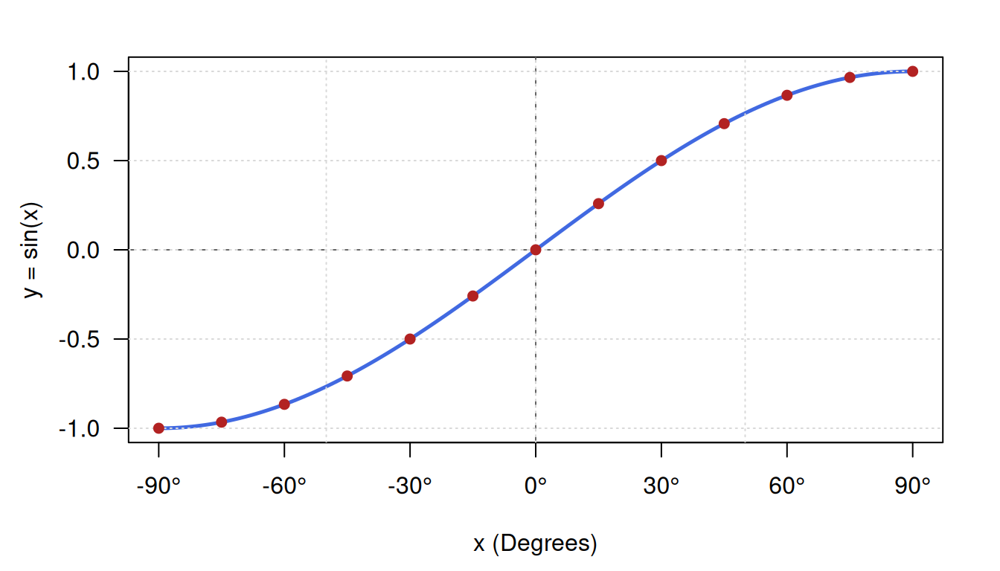
HIGHER MATHEMATICS
Lecture 03
1st Paper
Chapter 6.3
Trigonometric functions, Graph, Periodic properties
Friday, August 21, 2026
Trigonometric Functions
In mathematical analysis, trigonometric functions are real-valued functions that relate an angle of a right-angled triangle to ratios of two side lengths, or more generally, map real numbers representing arc lengths on a unit circle to Cartesian coordinates.
Domains and Ranges Summary
| Function | Notation | Domain (\(\operatorname{Dom}\)) | Range (\(\operatorname{Ran}\)) | Period (\(T\)) |
|---|---|---|---|---|
| Sine | \(y = \sin x\) | \(\mathbb{R} = (-\infty, \infty)\) | \([-1, 1]\) | \(2\pi\) |
| Cosine | \(y = \cos x\) | \(\mathbb{R} = (-\infty, \infty)\) | \([-1, 1]\) | \(2\pi\) |
| Tangent | \(y = \tan x\) | \(\mathbb{R} \setminus \left\{ \frac{(2n+1)\pi}{2} \mid n \in \mathbb{Z} \right\}\) | \(\mathbb{R} = (-\infty, \infty)\) | \(\pi\) |
| Cotangent | \(y = \cot x\) | \(\mathbb{R} \setminus \{ n\pi \mid n \in \mathbb{Z} \}\) | \(\mathbb{R} = (-\infty, \infty)\) | \(\pi\) |
| Secant | \(y = \sec x\) | \(\mathbb{R} \setminus \left\{ \frac{(2n+1)\pi}{2} \mid n \in \mathbb{Z} \right\}\) | \((-\infty, -1] \cup [1, \infty)\) | \(2\pi\) |
| Cosecant | \(y = \csc x\) | \(\mathbb{R} \setminus \{ n\pi \mid n \in \mathbb{Z} \}\) | \((-\infty, -1] \cup [1, \infty)\) | \(2\pi\) |
Detailed Analysis of Functions
\(y = \sin x\)
Domain, Range, and Period
- Domain: \(x \in \mathbb{R}\)
- Range: \(y \in [-1, 1]\)
- Period: \(2\pi \text{ rad} = 360^\circ\)
Plotting Table (\(-90^\circ\) to \(90^\circ\) at \(15^\circ\) Intervals)
| \(x\) (Degrees) | \(x\) (Radians) | Exact Value | Decimal Approximation (\(y\)) |
|---|---|---|---|
| \(-90^\circ\) | \(-\frac{\pi}{2}\) | \(-1\) | \(-1.000\) |
| \(-75^\circ\) | \(-\frac{5\pi}{12}\) | \(-\frac{\sqrt{6}+\sqrt{2}}{4}\) | \(-0.966\) |
| \(-60^\circ\) | \(-\frac{\pi}{3}\) | \(-\frac{\sqrt{3}}{2}\) | \(-0.866\) |
| \(-45^\circ\) | \(-\frac{\pi}{4}\) | \(-\frac{1}{\sqrt{2}}\) | \(-0.707\) |
| \(-30^\circ\) | \(-\frac{\pi}{6}\) | \(-\frac{1}{2}\) | \(-0.500\) |
| \(-15^\circ\) | \(-\frac{\pi}{12}\) | \(-\frac{\sqrt{6}-\sqrt{2}}{4}\) | \(-0.259\) |
| \(0^\circ\) | \(0\) | \(0\) | \(0.000\) |
| \(15^\circ\) | \(\frac{\pi}{12}\) | \(\frac{\sqrt{6}-\sqrt{2}}{4}\) | \(0.259\) |
| \(30^\circ\) | \(\frac{\pi}{6}\) | \(\frac{1}{2}\) | \(0.500\) |
| \(45^\circ\) | \(\frac{\pi}{4}\) | \(\frac{1}{\sqrt{2}}\) | \(0.707\) |
| \(60^\circ\) | \(\frac{\pi}{3}\) | \(\frac{\sqrt{3}}{2}\) | \(0.866\) |
| \(75^\circ\) | \(\frac{5\pi}{12}\) | \(\frac{\sqrt{6}+\sqrt{2}}{4}\) | \(0.966\) |
| \(90^\circ\) | \(\frac{\pi}{2}\) | \(1\) | \(1.000\) |
Drawing this points
A visualization for more angles
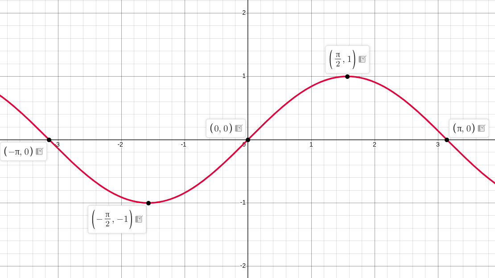
Graph description: Plot a smooth continuous wave passing through origin \((0,0)\), bounded between \(y = -1\) and \(y = 1\). Show symmetry across the origin.
Observable Properties
- Odd Function Symmetry: Symmetric about the origin, verifying \(\sin(-x) = -\sin x\).
- Continuity: Smooth and continuous without break across the entire real line.
- Boundedness: Bound strictly within the interval \([-1, 1]\).
\(y = \cos x\)
Domain, Range, and Period
- Domain: \(x \in \mathbb{R}\)
- Range: \(y \in [-1, 1]\)
- Period: \(2\pi \text{ rad} = 360^\circ\)
Plotting Table (\(-90^\circ\) to \(90^\circ\) at \(15^\circ\) Intervals)
| \(x\) (Degrees) | \(x\) (Radians) | Exact Value | Decimal Approximation (\(y\)) |
|---|---|---|---|
| \(-90^\circ\) | \(-\frac{\pi}{2}\) | \(0\) | \(0.000\) |
| \(-75^\circ\) | \(-\frac{5\pi}{12}\) | \(\frac{\sqrt{6}-\sqrt{2}}{4}\) | \(0.259\) |
| \(-60^\circ\) | \(-\frac{\pi}{3}\) | \(\frac{1}{2}\) | \(0.500\) |
| \(-45^\circ\) | \(-\frac{\pi}{4}\) | \(\frac{1}{\sqrt{2}}\) | \(0.707\) |
| \(-30^\circ\) | \(-\frac{\pi}{6}\) | \(\frac{\sqrt{3}}{2}\) | \(0.866\) |
| \(-15^\circ\) | \(-\frac{\pi}{12}\) | \(\frac{\sqrt{6}+\sqrt{2}}{4}\) | \(0.966\) |
| \(0^\circ\) | \(0\) | \(1\) | \(1.000\) |
| \(15^\circ\) | \(\frac{\pi}{12}\) | \(\frac{\sqrt{6}+\sqrt{2}}{4}\) | \(0.966\) |
| \(30^\circ\) | \(\frac{\pi}{6}\) | \(\frac{\sqrt{3}}{2}\) | \(0.866\) |
| \(45^\circ\) | \(\frac{\pi}{4}\) | \(\frac{1}{\sqrt{2}}\) | \(0.707\) |
| \(60^\circ\) | \(\frac{\pi}{3}\) | \(\frac{1}{2}\) | \(0.500\) |
| \(75^\circ\) | \(\frac{5\pi}{12}\) | \(\frac{\sqrt{6}-\sqrt{2}}{4}\) | \(0.259\) |
| \(90^\circ\) | \(\frac{\pi}{2}\) | \(0\) | \(0.000\) |
Drawing this points
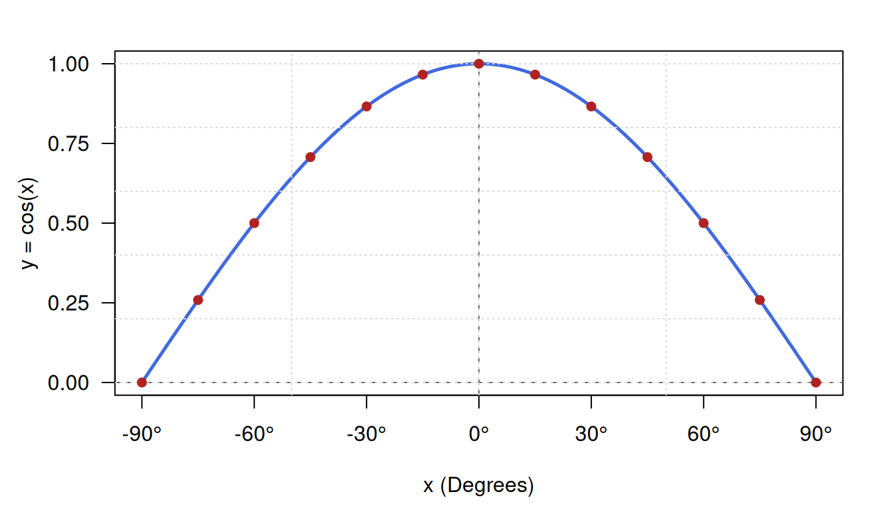
A visualization for more angles
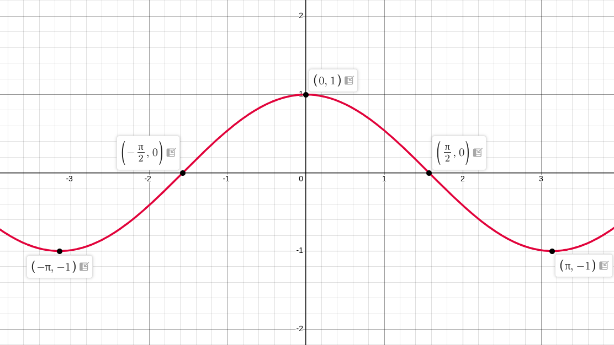
Graph description: Plot a continuous wave with a peak at \((0,1)\) and roots at \(x = -\frac{\pi}{2}\) and \(x = \frac{\pi}{2}\). Show symmetry across the y-axis.
Observable Properties
- Even Function Symmetry: Symmetric about the y-axis, verifying \(\cos(-x) = \cos x\).
- Phase Shift Relation: Shifted version of sine wave: \(\cos x = \sin\left(x + \frac{\pi}{2}\right)\).
- Extrema: Attains its maximum value \(1\) at \(x = 0\).
\(y = \tan x\)
Domain, Range, and Period
- Domain: \(\mathbb{R} \setminus \left\{ \dots, -\frac{\pi}{2}, \frac{\pi}{2}, \frac{3\pi}{2}, \dots \right\}\)
- Range: \(y \in (-\infty, \infty)\)
- Period: \(\pi \text{ rad} = 180^\circ\)
Plotting Table (\(-90^\circ\) to \(90^\circ\) at \(15^\circ\) Intervals)
| \(x\) (Degrees) | \(x\) (Radians) | Exact Value | Decimal Approximation (\(y\)) |
|---|---|---|---|
| \(-90^\circ\) | \(-\frac{\pi}{2}\) | Undefined | \(-\infty\) (Asymptote) |
| \(-75^\circ\) | \(-\frac{5\pi}{12}\) | \(-(2+\sqrt{3})\) | \(-3.732\) |
| \(-60^\circ\) | \(-\frac{\pi}{3}\) | \(-\sqrt{3}\) | \(-1.732\) |
| \(-45^\circ\) | \(-\frac{\pi}{4}\) | \(-1\) | \(-1.000\) |
| \(-30^\circ\) | \(-\frac{\pi}{6}\) | \(-\frac{1}{\sqrt{3}}\) | \(-0.577\) |
| \(-15^\circ\) | \(-\frac{\pi}{12}\) | \(-(2-\sqrt{3})\) | \(-0.268\) |
| \(0^\circ\) | \(0\) | \(0\) | \(0.000\) |
| \(15^\circ\) | \(\frac{\pi}{12}\) | \(2-\sqrt{3}\) | \(0.268\) |
| \(30^\circ\) | \(\frac{\pi}{6}\) | \(\frac{1}{\sqrt{3}}\) | \(0.577\) |
| \(45^\circ\) | \(\frac{\pi}{4}\) | \(1\) | \(1.000\) |
| \(60^\circ\) | \(\frac{\pi}{3}\) | \(\sqrt{3}\) | \(1.732\) |
| \(75^\circ\) | \(\frac{5\pi}{12}\) | \(2+\sqrt{3}\) | \(3.732\) |
| \(90^\circ\) | \(\frac{\pi}{2}\) | Undefined | \(+\infty\) (Asymptote) |
Drawing this points
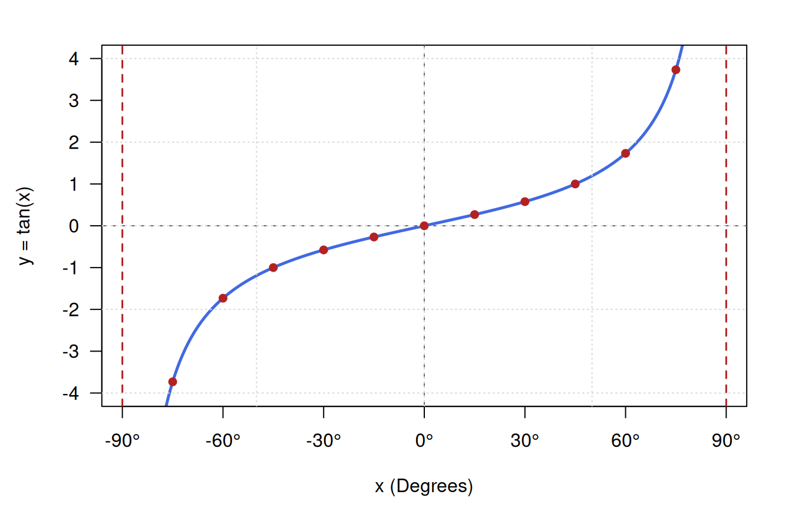
A visualization for more angles
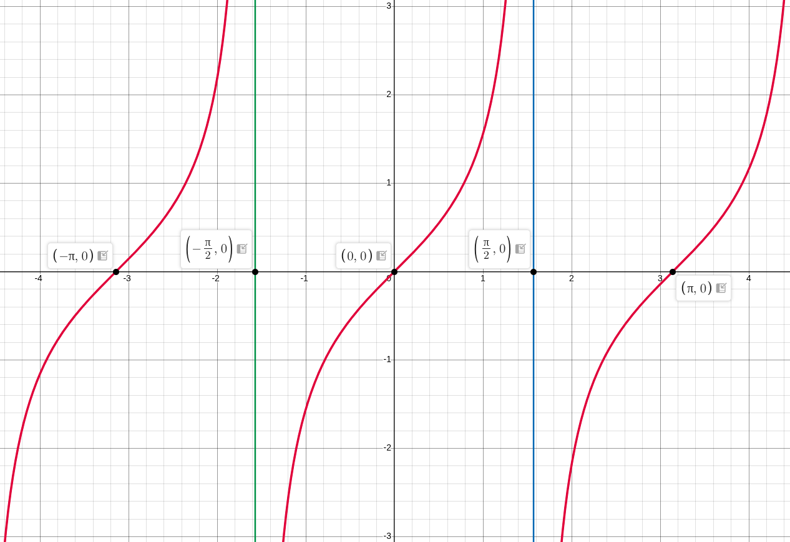
Graph description: Plot vertical asymptotic lines at \(x = -\frac{\pi}{2}\) and \(x = \frac{\pi}{2}\). Show the strictly increasing monotonic curve passing through \((0,0)\).
Observable Properties
- Vertical Asymptotes: Asymptotes occur where \(\cos x = 0\), i.e., \(x = \pm 90^\circ\).
- Monotonic Increasing: Strictly increases on each open interval between its asymptotes.
- Odd Function: \(\tan(-x) = -\tan x\).
\(y = \cot x\)
Domain, Range, and Period
- Domain: \(\mathbb{R} \setminus \{ \dots, -\pi, 0, \pi, \dots \}\)
- Range: \(y \in (-\infty, \infty)\)
- Period: \(\pi \text{ rad} = 180^\circ\)
Plotting Table (\(-90^\circ\) to \(90^\circ\) at \(15^\circ\) Intervals)
| \(x\) (Degrees) | \(x\) (Radians) | Exact Value | Decimal Approximation (\(y\)) |
|---|---|---|---|
| \(-90^\circ\) | \(-\frac{\pi}{2}\) | \(0\) | \(0.000\) |
| \(-75^\circ\) | \(-\frac{5\pi}{12}\) | \(-(2-\sqrt{3})\) | \(-0.268\) |
| \(-60^\circ\) | \(-\frac{\pi}{3}\) | \(-\frac{1}{\sqrt{3}}\) | \(-0.577\) |
| \(-45^\circ\) | \(-\frac{\pi}{4}\) | \(-1\) | \(-1.000\) |
| \(-30^\circ\) | \(-\frac{\pi}{6}\) | \(-\sqrt{3}\) | \(-1.732\) |
| \(-15^\circ\) | \(-\frac{\pi}{12}\) | \(-(2+\sqrt{3})\) | \(-3.732\) |
| \(0^\circ\) | \(0\) | Undefined | \(\pm\infty\) (Asymptote) |
| \(15^\circ\) | \(\frac{\pi}{12}\) | \(2+\sqrt{3}\) | \(3.732\) |
| \(30^\circ\) | \(\frac{\pi}{6}\) | \(\sqrt{3}\) | \(1.732\) |
| \(45^\circ\) | \(\frac{\pi}{4}\) | \(1\) | \(1.000\) |
| \(60^\circ\) | \(\frac{\pi}{3}\) | \(\frac{1}{\sqrt{3}}\) | \(0.577\) |
| \(75^\circ\) | \(\frac{5\pi}{12}\) | \(2-\sqrt{3}\) | \(0.268\) |
| \(90^\circ\) | \(\frac{\pi}{2}\) | \(0\) | \(0.000\) |
Drawing this points
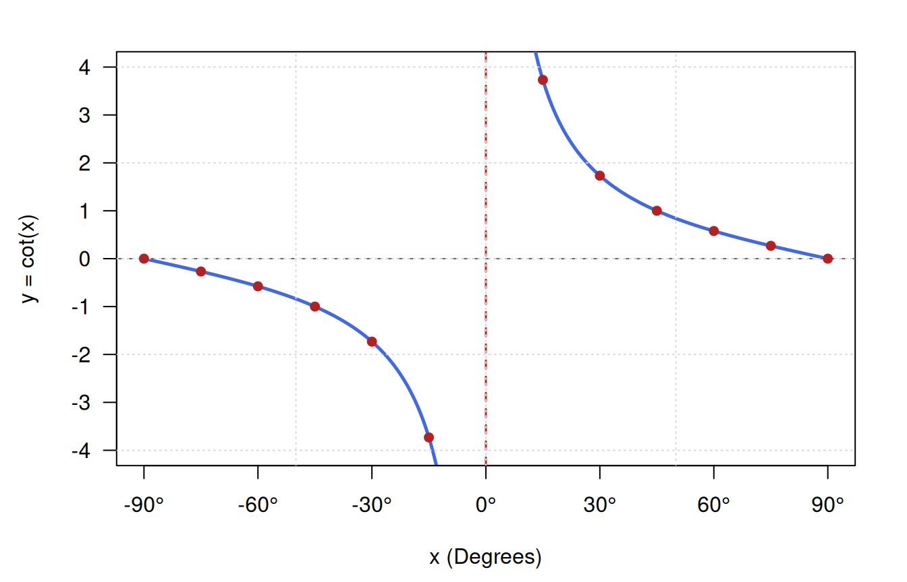
A visualization for more angles
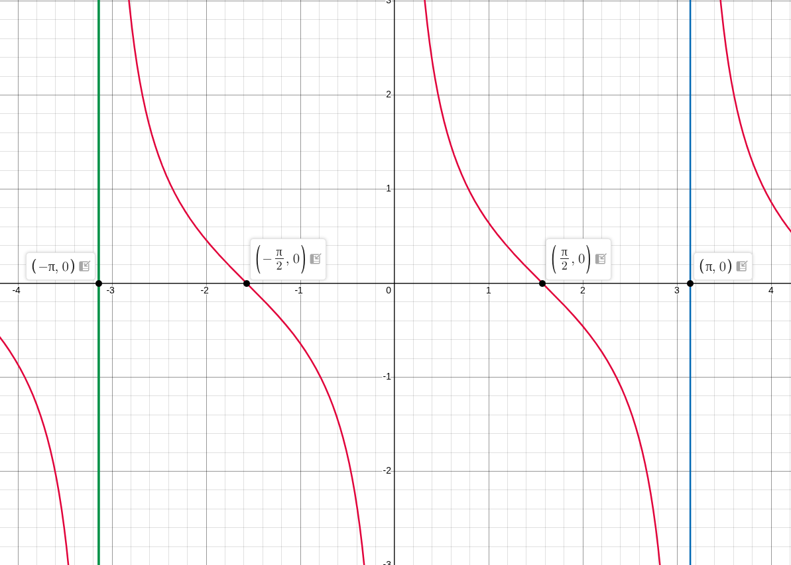
Graph description: Plot vertical asymptotic line at \(x = 0\). Show strictly decreasing curves passing through \(y=0\) at \(x = -\frac{\pi}{2}\) and \(x = \frac{\pi}{2}\).
Observable Properties
- Vertical Asymptote at Origin: Asymptote exists at \(x = 0^\circ\) because \(\sin(0) = 0\).
- Monotonic Decreasing: Strictly decreases between consecutive asymptotes.
- Reciprocal Symmetry: \(\cot x = \frac{1}{\tan x}\).
\(y = \sec x\)
Domain, Range, and Period
- Domain: \(\mathbb{R} \setminus \left\{ \frac{(2n+1)\pi}{2} \mid n \in \mathbb{Z} \right\}\)
- Range: \(y \in (-\infty, -1] \cup [1, \infty)\)
- Period: \(2\pi \text{ rad} = 360^\circ\)
Plotting Table (\(-90^\circ\) to \(90^\circ\) at \(15^\circ\) Intervals)
| \(x\) (Degrees) | \(x\) (Radians) | Exact Value | Decimal Approximation (\(y\)) |
|---|---|---|---|
| \(-90^\circ\) | \(-\frac{\pi}{2}\) | Undefined | \(+\infty\) (Asymptote) |
| \(-75^\circ\) | \(-\frac{5\pi}{12}\) | \(\sqrt{6}+\sqrt{2}\) | \(3.864\) |
| \(-60^\circ\) | \(-\frac{\pi}{3}\) | \(2\) | \(2.000\) |
| \(-45^\circ\) | \(-\frac{\pi}{4}\) | \(\sqrt{2}\) | \(1.414\) |
| \(-30^\circ\) | \(-\frac{\pi}{6}\) | \(\frac{2}{\sqrt{3}}\) | \(1.155\) |
| \(-15^\circ\) | \(-\frac{\pi}{12}\) | \(\sqrt{6}-\sqrt{2}\) | \(1.035\) |
| \(0^\circ\) | \(0\) | \(1\) | \(1.000\) |
| \(15^\circ\) | \(\frac{\pi}{12}\) | \(\sqrt{6}-\sqrt{2}\) | \(1.035\) |
| \(30^\circ\) | \(\frac{\pi}{6}\) | \(\frac{2}{\sqrt{3}}\) | \(1.155\) |
| \(45^\circ\) | \(\frac{\pi}{4}\) | \(\sqrt{2}\) | \(1.414\) |
| \(60^\circ\) | \(\frac{\pi}{3}\) | \(2\) | \(2.000\) |
| \(75^\circ\) | \(\frac{5\pi}{12}\) | \(\sqrt{6}+\sqrt{2}\) | \(3.864\) |
| \(90^\circ\) | \(\frac{\pi}{2}\) | Undefined | \(+\infty\) (Asymptote) |
Drawing this points
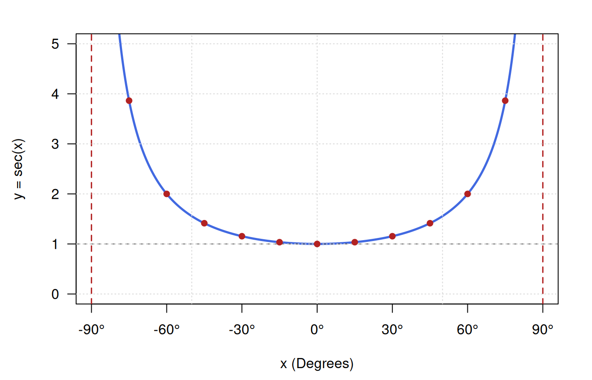
A visualization for more angles
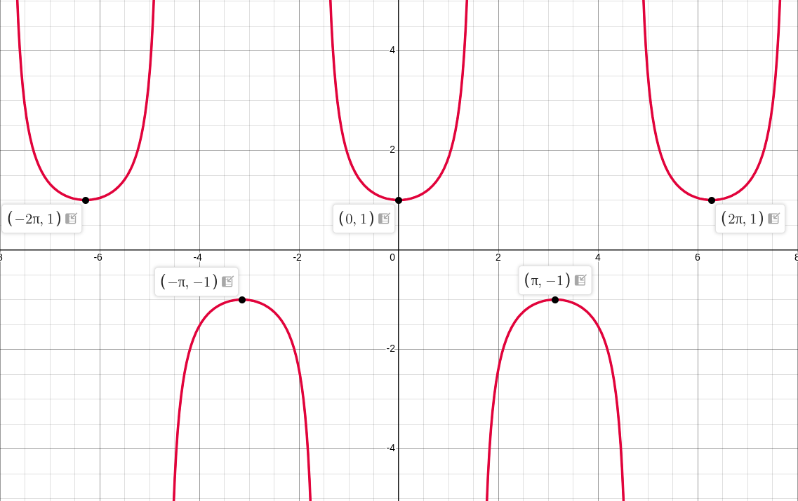
Graph description: Plot vertical asymptotes at \(x = \pm \frac{\pi}{2}\). Draw a U-shaped curve with a local minimum at \((0, 1)\) staying strictly above \(y = 1\) in this domain segment.
Observable Properties
- Range Gap: No graph exists in the open interval \((-1, 1)\).
- Even Function: Symmetric with respect to the y-axis, \(\sec(-x) = \sec x\).
- Local Minimum: Reaches local minimum at \((0, 1)\).
\(y = \csc x\)
Domain, Range, and Period
- Domain: \(\mathbb{R} \setminus \{ n\pi \mid n \in \mathbb{Z} \}\)
- Range: \(y \in (-\infty, -1] \cup [1, \infty)\)
- Period: \(2\pi \text{ rad} = 360^\circ\)
Plotting Table (\(-90^\circ\) to \(90^\circ\) at \(15^\circ\) Intervals)
| \(x\) (Degrees) | \(x\) (Radians) | Exact Value | Decimal Approximation (\(y\)) |
|---|---|---|---|
| \(-90^\circ\) | \(-\frac{\pi}{2}\) | \(-1\) | \(-1.000\) |
| \(-75^\circ\) | \(-\frac{5\pi}{12}\) | \(-(\sqrt{6}-\sqrt{2})\) | \(-1.035\) |
| \(-60^\circ\) | \(-\frac{\pi}{3}\) | \(-\frac{2}{\sqrt{3}}\) | \(-1.155\) |
| \(-45^\circ\) | \(-\frac{\pi}{4}\) | \(-\sqrt{2}\) | \(-1.414\) |
| \(-30^\circ\) | \(-\frac{\pi}{6}\) | \(-2\) | \(-2.000\) |
| \(-15^\circ\) | \(-\frac{\pi}{12}\) | \(-(\sqrt{6}+\sqrt{2})\) | \(-3.864\) |
| \(0^\circ\) | \(0\) | Undefined | \(\pm\infty\) (Asymptote) |
| \(15^\circ\) | \(\frac{\pi}{12}\) | \(\sqrt{6}+\sqrt{2}\) | \(3.864\) |
| \(30^\circ\) | \(\frac{\pi}{6}\) | \(2\) | \(2.000\) |
| \(45^\circ\) | \(\frac{\pi}{4}\) | \(\sqrt{2}\) | \(1.414\) |
| \(60^\circ\) | \(\frac{\pi}{3}\) | \(\frac{2}{\sqrt{3}}\) | \(1.155\) |
| \(75^\circ\) | \(\frac{5\pi}{12}\) | \(\sqrt{6}-\sqrt{2}\) | \(1.035\) |
| \(90^\circ\) | \(\frac{\pi}{2}\) | \(1\) | \(1.000\) |
Drawing this points
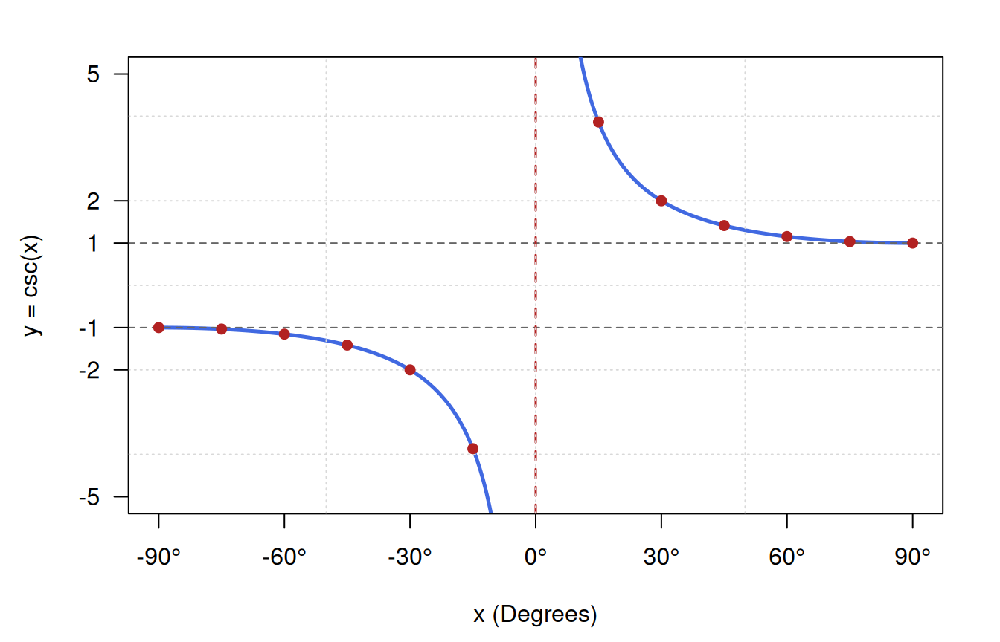
A visualization for more angles
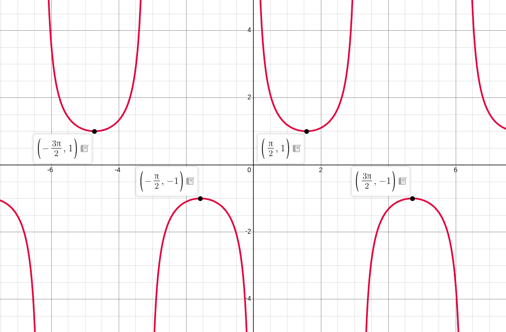
Graph description: Plot vertical asymptote at \(x = 0\). Show inverted U-shaped branch for \(x < 0\) (local maximum at \((-90^\circ, -1)\)) and upright U-shaped branch for \(x > 0\) (local minimum at \((90^\circ, 1)\)).
Observable Properties
- Asymptote at \(x = 0\): Splitting the function into positive and negative branches.
- Range Gap: Values never lie strictly between \(-1\) and \(1\).
- Odd Function Symmetry: \(\csc(-x) = -\csc x\).
Shortcut Techniques
Technique 1
Periods for \(\sin, \cos, \sec, \csc\) functions -
- When power of function are even, Period = \(\frac{2\pi}{\lvert \text{coefficient of variable} \rvert}\)
- When power of function are odd, Period = \(\frac{\pi}{\lvert \text{coefficient of variable} \rvert}\)
Periods for \(\tan, \cot\) functions -
Both for even and odd power of function, Period = \(\frac{\pi}{\lvert \text{coefficient of variable} \rvert}\)